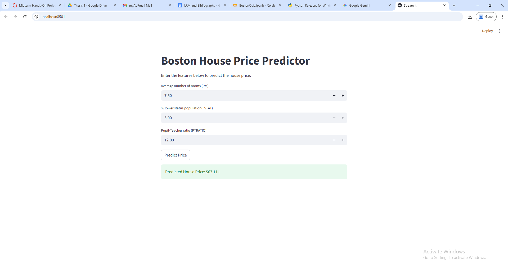

Finals - Hands-on Exercise 1 (Boston House Price Prediction Model Deployment Using Streamlit)
Description: A machine learning deployment exercise transitioning the optimized Boston Housing Artificial Neural Network (ANN) from the previous term into a local, Python-native web application using the Streamlit framework.
Objectives/Purpose:
- To migrate model deployment away from the Anvil platform toward a script-based UI framework.
- To construct an interactive web interface capable of accepting user inputs for key housing features (RM, LSTAT, PTRATIO).
- To load serialized model files (`.keras`) and preprocessing objects (Scikit-Learn `StandardScaler`) into a new deployment environment.
- To execute real-time inference and display formatted pricing predictions to the user.
Key Features
- Streamlit UI Integration: Utilized Streamlit's declarative syntax to map interactive UI components (sliders and buttons) directly to backend Python variables without writing HTML or CSS.
- Stateful Resource Loading: Implemented caching mechanisms to load the deep learning model and scaler efficiently, preventing the app from reloading massive files upon every user interaction.
- Real-time Inference Pipeline: Scaled live user inputs exactly as the training data was scaled, fed them into the Keras model, and transformed the raw output tensor into a readable dollar format.
Important Code Blocks
1. Loading Serialized Components
This snippet demonstrates how the pre-trained neural network and the previously fitted `StandardScaler` are loaded into the Streamlit application. Using the @st.cache_resource decorator ensures these heavy objects are only loaded once into memory.
import streamlit as st
from tensorflow.keras.models import load_model
import joblib
# Cache the model and scaler to optimize performance
@st.cache_resource
def load_components():
model = load_model('boston_model.keras')
scaler = joblib.load('scaler.save')
return model, scaler
model, scaler = load_components()2. Constructing the Interface and Predicting
This block captures the specific demographic and structural inputs from the user via sliders. Upon clicking the predict button, the data is scaled, passed through the model, and displayed.
st.title("Boston House Price Prediction")
# Input sliders mapped to model features
rm = st.slider("Average number of rooms per dwelling (RM)", 1.0, 10.0, 6.0)
lstat = st.slider("Percentage of lower status of the population (LSTAT)", 1.0, 40.0, 12.0)
ptratio = st.slider("Pupil-teacher ratio by town (PTRATIO)", 10.0, 25.0, 15.0)
if st.button("Predict"):
# Reshape and scale the inputs
input_features = scaler.transform([[rm, lstat, ptratio]])
# Generate prediction and convert to real-world value
prediction = model.predict(input_features)[0][0] * 100_000
st.success(f"Predicted House Price: ${prediction:,.2f}")Screenshots & Results

Observations:
- The Streamlit interface proved to be highly responsive. The deployment successfully maintained the accuracy of the Model 3 architecture developed during the Midterm, correctly adjusting price predictions based on the heavy negative weights associated with high LSTAT values.
Tools & Technologies
- Languages: Python 3
- Libraries/Frameworks: Streamlit (Web UI), TensorFlow/Keras (Inference), Scikit-Learn (Data Scaling), Joblib (Serialization)
- Platforms: Localhost / Cloud Deployment
Challenges & Solutions
Problems Encountered: Transitioning from Anvil (which uses a drag-and-drop web builder and uplink) to Streamlit required a paradigm shift. The primary challenge was ensuring that the data scaling process remained identical to the training phase; feeding raw, unscaled inputs from the sliders into the model would result in wildly inaccurate predictions.
How I Solved Them: I resolved this by saving the exact StandardScaler instance used during training via the joblib library. By loading this specific scaler into the Streamlit app, I guaranteed that the live input features were normalized using the exact same mean and variance as the original training dataset before being passed to the model.predict() function.
Learning Reflection
What I Learned: I learned how to serialize and export machine learning models and their associated preprocessing objects for use outside of a Jupyter/Colab notebook. I also gained practical experience with Streamlit's script-based approach to building data applications.
Skills Gained: Model serialization (HDF5/.keras and Joblib format), rapid UI prototyping in Python using Streamlit, and managing stateful resources in web applications.